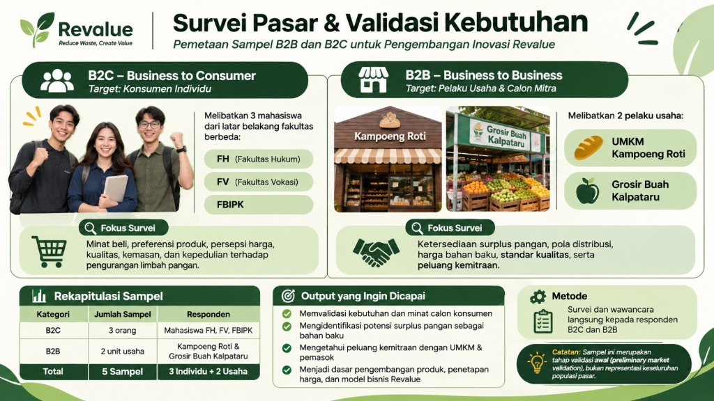

From Surplus to New Value
Tim Kompespiking • ECTION 2026 UNESA
“Pangan dapat kehilangan nilai jual tanpa kehilangan nilai guna.”
— Mengubah surplus layak olah (Grade B) menjadi tepung komposit & purée terstandar berbasis Food Passport (QR) dan Circularity Score.
Kehalusan 100 Mesh • Vacuum Multi-Layer 1 kg
Paradoks struktural ekosistem pangan Indonesia: Ratusan ton bahan pangan berkualitas afkir setiap hari di saat industri kuliner dan UMKM lokal tertekan harga bahan baku yang kian mahal.
Timbulan Food Loss and Waste (FLW) nasional menurut studi komprehensif Bappenas & WRI.
Data resmi SIPSN KLHK: Sisa makanan menduduki porsi tertinggi sampah nasional, melampaui plastik.
Setara 4%–5% Produk Domestik Bruto (PDB) Indonesia yang terbuang sia-sia per tahun.
Faktor emisi gas metana pembusukan organik di TPA yang mempercepat pemanasan global.
Hotel, Restoran, Supermarket, Katering, Pasar
UMKM Bakery, Industri Kue, Produsen Mi & Kuliner
Solusi Intervensi REVALUE: Menjadi Micro Circular Hub perantara terstandar yang menstabilkan masa simpan (2-3 hari menjadi 6-12 bulan), menjamin higienitas MBRIO Lab, serta melengkapi setiap kemasan dengan Food Passport QR.
REVALUE mengoperasikan fasilitas pemrosesan sirkular mikro berbasis *cloud kitchen* berbiaya efisien (*asset-light*) untuk mentransformasi surplus menjadi komoditas pangan berharga tinggi.
Metode pengolahan adaptif yang disesuaikan dengan fluktuasi pasokan komoditas harian: dehidrasi suhu rendah (50–60°C) untuk tepung komposit 100 mesh, dan pasteurisasi termal cepat (75–85°C) untuk purée beku tanpa menghilangkan nutrisi alami.
Sistem ketertelusuran transparan per batch. Pindai kode QR pada setiap kemasan untuk menampilkan riwayat asal bahan surplus, waktu penjemputan, data kadar air lab MBRIO, tanggal produksi, dan rekomendasi formulasi.
Algoritma matematis terbobot (skala 0–100, contoh: 94/100) yang mengukur laju pemulihan massa, perpanjangan masa simpan, dan konversi emisi gas rumah kaca yang dicegah untuk laporan CSR/ESG otomatis mitra hulu.
Mewujudkan rantai pasok pangan *zero food loss* yang inklusif, menghubungkan ekosistem hulu perhotelan-pasar hingga hilir UMKM melalui standardisasi ilmiah dan transparansi digital terverifikasi.
Rescue Network: Menyelamatkan surplus terstandar dari hotel, ritel & pasar.
Standardized Upcycling: Pengujian lab independen MBRIO, BPOM & Halal.
Pertumbuhan Inklusif: Menghemat HPP UMKM kuliner & membuka lapangan kerja hijau.
Diversifikasi penawaran terpadu yang menyasar segmen bisnis (B2B), konsumen individu (B2C), serta layanan teknologi & maklon (PaaS/SaaS).
Bahan baku olahan bernilai tinggi untuk UMKM bakery, produsen roti, kue kering, pastry, dan mi sayur sehat dalam kemasan vakum 1 kg, 5 kg, dan 10 kg.
Varian: Wortel, Labu Kuning, Bayam Hijau, Pisang Matang, Apel Tropis (Kehalusan 80–100 Mesh, Kadar Air ≤ 8%).
Varian: Purée Mangga, Pisang Matang, Tomat Konsentrat, Pasta Bumbu. Dipasteurisasi & dibekukan pada suhu −18°C.
Produk artisan siap santap bernilai tambah bagi generasi muda (17–45 tahun) dan konsumen yang mengadopsi gaya hidup sehat ramah lingkungan (*conscious consumers*).
Olahan dari buah overripe (pisang, nanas, mangga, stroberi) dalam jar kaca higienis tanpa pemanis buatan.
Camilan renyah hasil pengeringan dehydrator, bebas kolesterol, dan kaya serat pangan murni.
Sari buah segar tanpa tambahan air berlebih & nugget nabati berbasis serat sayur/jamur.
Model pendapatan berulang (*recurring revenue*) berbasis jasa pengolahan pangan dan lisensi perangkat lunak pelaporan keberlanjutan ESG.
Jasa maklon olah surplus bahan pangan mitra ritel/perkebunan menjadi produk setengah jadi (Rp750.000/mitra/bulan).
Paket keanggotaan hotel/resto untuk penjemputan rutin, sertifikat hijau & laporan audit CSR (Rp300.000/mitra/bulan).
Lisensi perangkat lunak kode QR keterlacakan & Circularity Score untuk brand pangan berkelanjutan (Rp500.000/klien/bulan).
Siklus operasional tertutup (*closed-loop*) terstandarisasi yang mengubah surplus berumur 2–3 hari menjadi komoditas bernilai tinggi berumur 6–12 bulan.
Surplus Pangan Segar Diselamatkan dari Mitra Hulu (Input Bahan Segar)
Lini Purée Beku (Yield 78%) & Lini Dehidrasi Tepung (Yield 30%)
Tepung & Purée B2B Terstandar (3.600 kg/tahun, siap serap UMKM)
Coba langsung simulator pemindaian kode QR per batch produk REVALUE. Ketuk salah satu batch di bawah ini untuk melihat lembar data laboratorium MBRIO, asal usul penyelamatan, dan Circularity Score secara *real-time*.
Bahan Baku B2B (Standardized Composite Flour)
Pindai dengan kamera ponsel
Substitusi 15%-25% tepung terigu untuk bakery, bolu, cookies, pastry, dan mi sayur sehat.
Sistem tertutup 4 zona fungsional: Dari hulu, jantung nilai, hubungan saluran hilir, hingga efisiensi mesin finansial berkelanjutan.
Pemotongan biaya retribusi sampah organik, insentif pemulihan nilai ekonomi Rp600rb/bln, dan laporan emisi karbon otomatis untuk kepatuhan ESG/CSR.
Bahan baku pangan olahan terstandar higienis (lulus uji lab MBRIO), harga hemat Rp45.000/kg (hemat 25%-52.6%), dan ketertelusuran penuh lewat Food Passport.
Mengurangi potensi pembusukan 36 ton pangan dalam 3 tahun, mencegah 83,67 ton emisi CO₂-eq, dan menciptakan green jobs lokal.
Kuantifikasi ukuran pasar berbasis data resmi BPS serta hasil survei lapangan langsung kepada calon mitra hulu dan pembeli hilir.
Pasar nasional: 4.850.000 unit usaha kuliner mikro-kecil di seluruh Indonesia (BPS 2024).
Regional Jawa Timur: 167.344 UMKM mamin di koridor Surabaya–Sidoarjo & Malang Raya.
Target Tahun 1 REVALUE (300 kg/bln): Cukup menguasai hanya 0,03% pangsa pasar Surabaya!
Pemetaan sampel awal B2C (Konsumen Mahasiswa) dan B2B (Mitra Usaha & Pemasok)
Memvalidasi ketersediaan pasokan surplus buah segar secara konsisten setiap minggu di tingkat grosir, serta mengonfirmasi minat beli UMKM bakery terhadap bahan baku tepung komposit alami dengan harga di bawah Rp50.000/kg.
Melibatkan mahasiswa dari Fakultas Hukum (FH), Fakultas Vokasi (FV), dan FBIPK. Menunjukkan tingkat penerimaan 100% terhadap makanan olahan sirkular dengan catatan kebersihan teruji lab dan desain kemasan modern.

Struktur biaya ramping (*asset-light*), efisiensi modal tinggi, titik impas rendah, serta kalkulator simulasi sensitivitas volume produksi yang dapat Anda atur secara dinamis.
| Komponen Finansial | Tahun 1 (1 Hub - 3.600 kg) | Tahun 2 (Optimasi - 5.400 kg) | Tahun 3 (2 Hub - 9.000 kg) | Akumulasi 3 Tahun |
|---|---|---|---|---|
| Total Pendapatan (Omzet) | Rp252.000.000 | Rp405.000.000 | Rp685.800.000 | Rp1.342.800.000 |
| Biaya Operasional (OpEx) | Rp171.000.000 | Rp228.780.000 | Rp381.300.000 | Rp781.080.000 |
| Laba Bersih Operasional | Rp81.000.000 | Rp176.220.000 | Rp304.500.000 | Rp561.720.000 |
| Margin Laba Bersih (%) | 32,1% | 43,5% | 44,4% | 41,8% Rata-rata |
| Kas Bersih Kumulatif | Rp46.500.000 | Rp222.720.000 | Rp527.220.000 | Rp527.220.000 |
REVALUE tidak memposisikan kelestarian lingkungan sebagai beban donasi, melainkan mesin pencipta nilai ekonomi regeneratif (*People, Planet, Prosperity*).
Menekan laju food loss dengan menyelamatkan 7,2 ton surplus segar di Tahun 1 (36 ton dalam 3 tahun) dan memperpanjang masa simpan hingga 12 bulan.
Menciptakan lapangan kerja hijau (*green jobs*) langsung bagi generasi muda, insentif pemulihan nilai mitra hulu, serta bahan baku murah bagi UMKM kuliner.
Membangun prototipe infrastruktur sirkular mikro berbasis *cloud kitchen* terdesentralisasi yang siap direplikasi ke berbagai kota kuliner nasional.
Struktur bagan fungsional berbasis proyek dengan pembagian peran terperinci yang mencakup manajemen strategis, rekayasa teknologi pangan, serta infrastruktur sistem digital dan rantai pasok.
Chief Executive Officer (CEO)
Memimpin arah visi bisnis, negosiasi kontrak pasokan surplus hulu (hotel/supermarket/pasar), strategi penetrasi B2B ke UMKM bakery, serta manajemen arus kas CapEx & OpEx.
Chief Operating Officer (COO)
Bertanggung jawab atas operasional fasilitas Micro Circular Hub, SOP sanitasi & sortasi 0% toleransi busuk, formulasi Adaptive Upcycling, serta kepatuhan standar BPOM & Halal.
Chief Technology Officer (CTO)
Merancang arsitektur web Food Passport QR, mesin kalkulasi Circularity Score, integrasi Automated ESG Dashboard mitra, serta manajemen rantai pendingin logistik cold-box.
Formulasi taktik eksekusi berbasis kekuatan internal dan peluang eksternal dalam menghadapi risiko persaingan dan stigma pangan sirkular.
Tahapan pertumbuhan bertahap yang terukur dari validasi single hub hingga replikasi waralaba sosial (*social franchise*) berskala nasional.
Apakah Anda penyedia surplus pangan hulu, pelaku UMKM kuliner yang mencari bahan baku hemat terstandar, atau juri & mitra investor? Kami siap berdiskusi langsung.
Isi formulir berikut dan tim kami akan merespons dalam 1x24 jam.